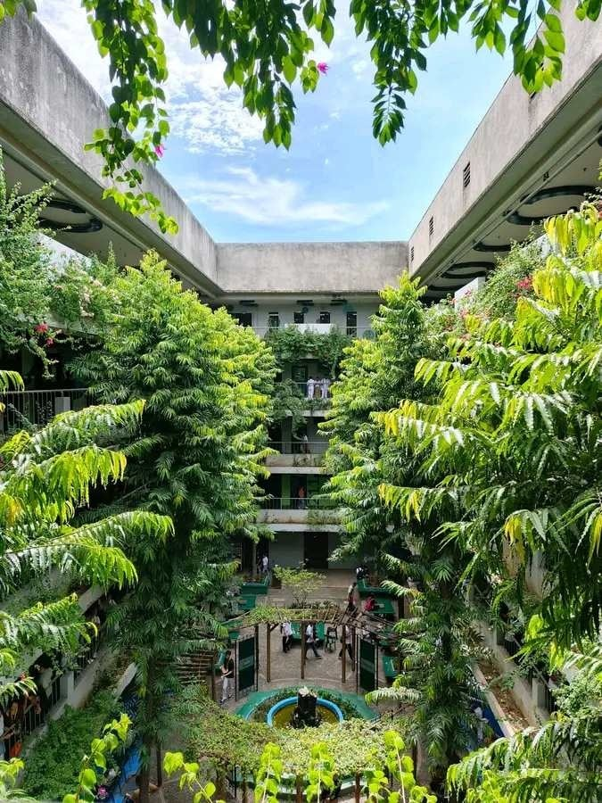

PHINMA CAGAYAN DE ORO COLLEGE
The school where your goals can be granted!

The school where your goals can be granted!
BSBA Student • Scholarship Recipient • Passionate Learner
Cagayan de Oro College, or COC, is noted for upholding its core values of competence, integrity, openness, patriotism, and devotion. These principles are deeply embedded in the organization and manifest themselves in the daily conduct of its faculty, staff, and students. These values establish COC's identity, guide its members, and motivate it to strive for excellence and meaningful influence.
Our campus events help students explore their passions while preparing for future careers.



Marketing management is the art and method of comprehending people's requirements and desires and figuring out how to effectively reach them. It's not only about making sales. It all comes down to connecting. It all boils down to knowing your audience, telling a compelling story, and building credibility over time. Whether you're starting out in business, running a small company, or managing a brand, marketing management helps you turn ideas into action.
The goal of marketing management is to add value for consumers while supporting business growth. It's about making a profit while keeping the customer in mind.
My journey at PHINMA COC has been filled with growth, laughter, and meaningful experiences. From the very first day, I felt welcomed by the community—everyone, from the instructors to my fellow students, made it easy to feel at home.
One of the moments I’ll always remember was during a campus event where we showcased our talents and bonded with other students. It was more than just fun—it reminded me that learning doesn’t only happen in the classroom. It happens in the friendships we build and the confidence we gain from trying new things.
As a BSBA student, I’ve been challenged to think more critically and apply what I’ve learned in real-world scenarios. The lessons here aren’t just academic—they’re life lessons that I know will help shape my future. The instructors don’t just teach; they guide and encourage us every step of the way.
I’m also very thankful to be a recipient of the HK Scholarship. Having 50% of my tuition covered has really helped lessen the financial burden on my family and allowed me to focus on what matters most—my education and personal development.
PHINMA COC is more than just a school to me. It’s a place where I’ve discovered my potential, found true friends, and built a clearer vision of the future I want to achieve.